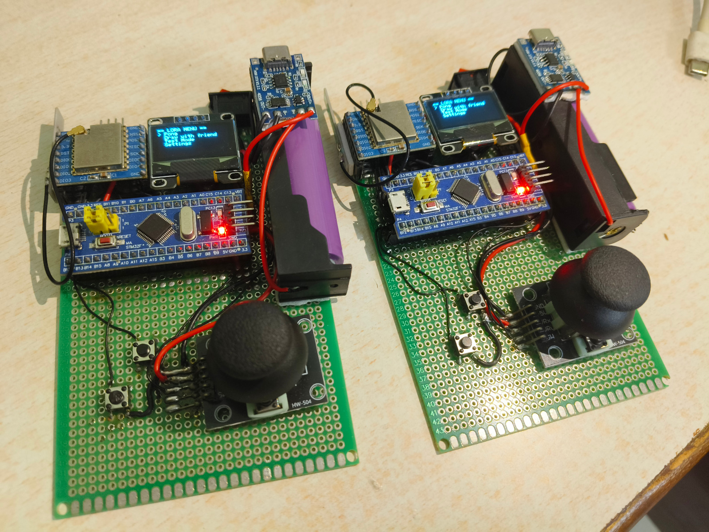
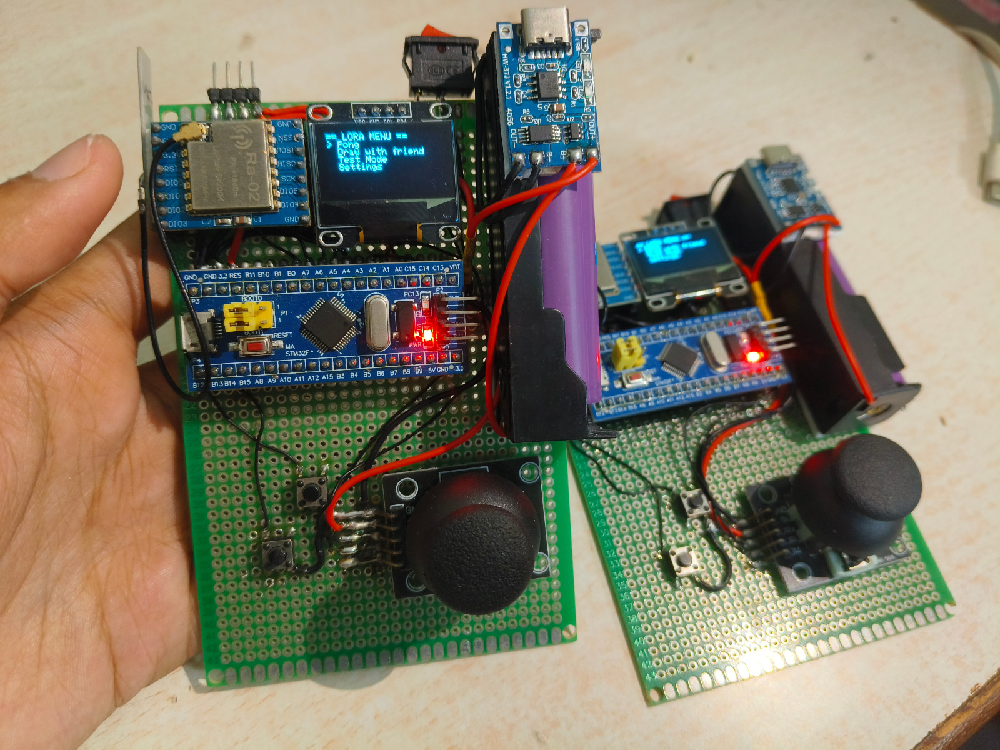

/ PROJECT 01 / FINISHED
nRF Controller & Receiver
This project was initiated by Kinjal, Jaikhlong and Preetom back in late 2025. The original goal was to use it as a mid-range real-time audio communication device. However, due to limitations, the project had to be turned into a digital console.
Gallery


Development
The current project has a vero board holding the components together, two LoRa transceivers and a Blue Pill. It also has an OLED screen, joystick and some buttons. The transmitter is currently powered by a single Li-ion power bank.
The project has been on halt now. Due to sevire limitations.
Resources